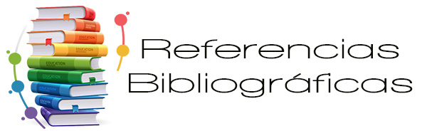

- https://ffyh.unc.edu.ar/materiales-educativos-abiertos/slider/que-es-un-material-educativo/
- https://eco-consultas.aulavirtual.unc.edu.ar/mod/book/view.php?id=41309
- https://concepto.de/recursos-didacticos/
- https://www.orientanet.es/que-son-los-recursos-didacticos-y-ejemplos/
- https://campus.paho.org/es/tipos-de-recursos-educativos
- https://www.unir.net/educacion/revista/tic-en-el-aula/
- https://tesorocurado.ar/los-recursos-digitales-que-son-y-como-se-utilizan-en-la-era-digital/
- https://rea.ceibal.edu.uy/elp/ocw-rea-laboratorio-de-objetos-de-aprendizaje/usos_y_ventajas_de_los_recursos_educativos_digitales.html
- https://www.lucaedu.com/recursos-educativos-digitales/
- https://genial.ly/es/crear/recursos-educativos/
- https://bing.com/search?q=c%c3%b3mo+crear+materiales+educativos
- https://www.conectatealalectura.cl/2016/01/05/100-herramientas-gratuitas-para-crear-materiales-educativos/
- https://spain.minilandeducational.com/school/pros-contras-recursos-educativos-digitales/
- https://docshare.tips/ventajas-y-desventajas-de-los-recursos-digitales_5878fed3b6d87f7d618b4c90.html
